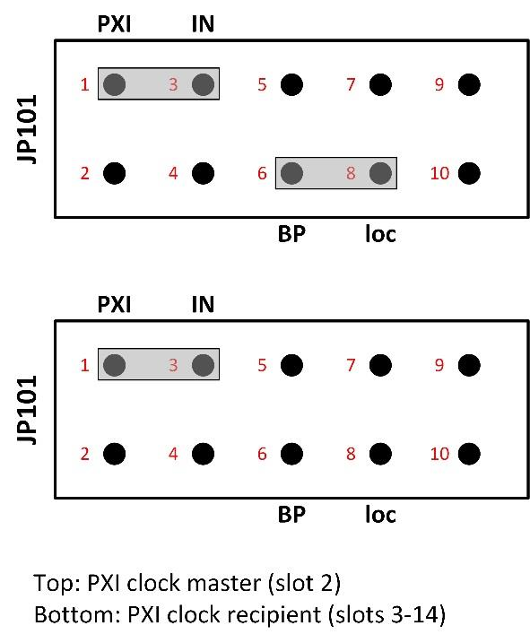
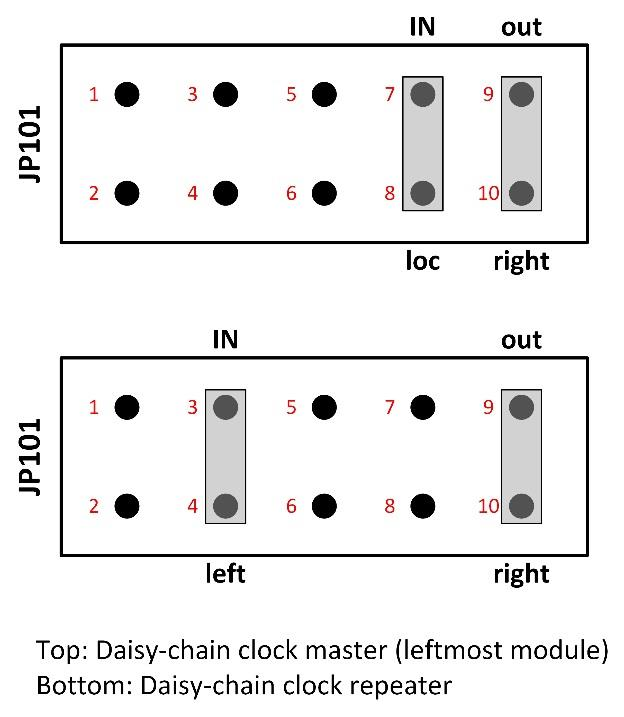
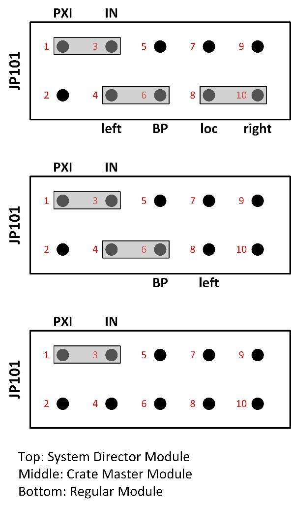
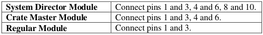
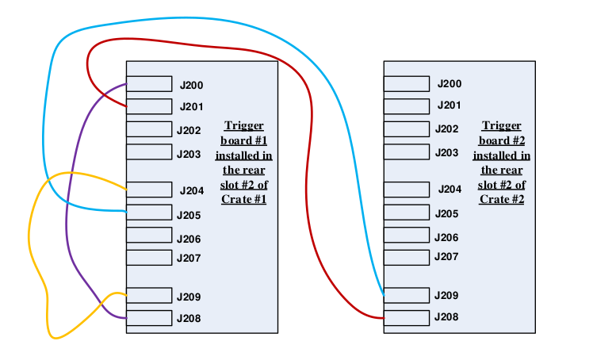
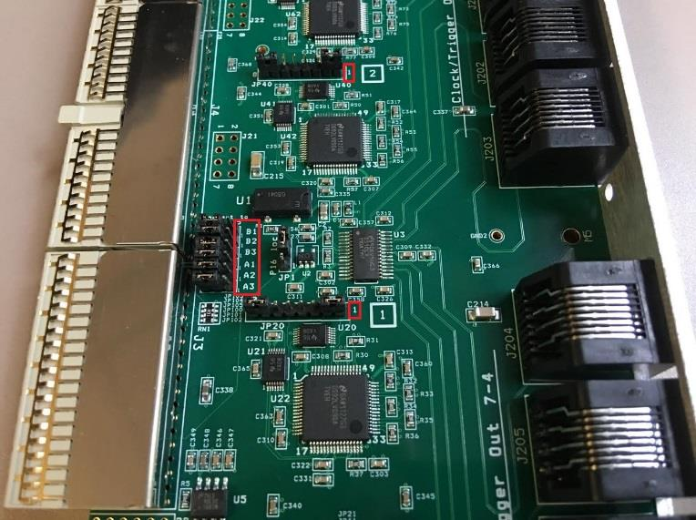
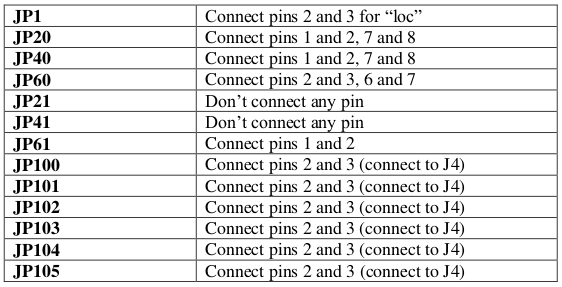
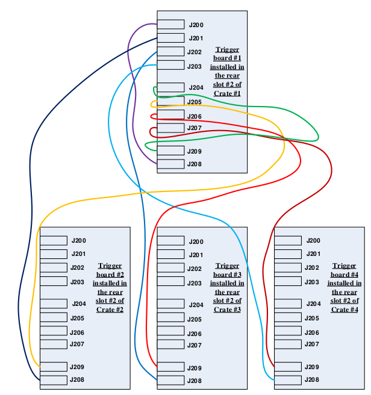

时间同步¶
当许多 Pixie-16 模块作为一个系统一起运行时，可能需要在它们之间同步时钟和定时器，并在模块之间分配触发。 还需要确保在所有模块中同步启动和停止运行。 所有这些信号都分布在 Pixie-16 机箱的 PXI 背板。

在多模块系统中，将有一个时钟主机和多个时钟从机或中继器。 可以通过在电路板右下角附近的跳针 JP101 上设置分流器来选择模块的时钟功能。 10针跳针 JP101 如图所示，顶部标有红色标记。 提供分流器以连接适合于每种所选时钟分配模式的引脚。 下面描述了四种时钟分配模式，独立时钟模式，PXI 时钟模式，菊花链时钟模式和多机箱时钟模式。
警告
在 250 MHz 或 500 MHz Pixie-16 模块中，FPGA 中的信号处理时钟频率分别降频为 125 MHz 或 100 MHz，以便更容易地实现设计。 无论何时重新初始化模块，该降频都可能导致不同的时钟相位，从而导致给定的 250 MHz 或 500 MHz Pixie-16 模块中每个通道的时间戳偏移量不同。 可能需要校准来量化每个通道的不同时间戳偏移。
独立时钟模式¶

如果系统中仅使用一个 Pixie-16 模块，或者模块之间的时钟不需要同步，则应将模块设置为单独的时钟模式。 将 JP101 的引脚7（时钟输入）与分流器连接到引脚8（loc-IN）。 这将使用 Pixie-16 模块的 50 MHz 本地晶体振荡器作为时钟源。
PXI 时钟模式¶
在多个 Pixie-16 模块之间分配时钟的首选方法是使用分布在背板上的 PXI 时钟。该时钟默认在背板上生成，是一个 10 MHz 的时钟信号，然后由扇出缓冲区重复该信号，并通过具有最小偏差（每个插槽的走线长度相等）的专用线连接到每个机箱插槽。虽然 10 MHz 的速度太慢，不足以成为 Pixie-16 的有用时钟，但它可以被安装在 2 号插槽中的 Pixie-16 模块通过 JP101 上适当的分流器设置发出的本地时钟信号所覆盖。
通过连接 JP101 的插脚 6 和 8（LOC–BP），插槽 2 中的 Pixie-16 模块可以配置为 PXI 时钟主机。所有模块，包括时钟主机，都应设置为通过连接 JP101（PXI-IN）上的插脚 1 和 3 来接收 PXI 时钟。这样，来自 Pixie-16 时钟主机的 50 MHz 时钟通过几乎相同的时钟相位的背板分配给所有 Pixie-16 模块。
与菊花链时钟模式相比，PXI 时钟模式的另一个优点是，除了必须安装在插槽 2 中的 Pixie-16 主模块外，其它 Pixie-16 从模块可以安装在 Pixie-16 机箱的任何其他插槽中。相反，当使用菊花链时钟模式时，所有 Pixie-16 模块必须相邻安装，即模块之间不允许有间隙。
菊花链时钟模式¶
时钟分配的另一种选择是将时钟从一个模块串到另一个模块，每个模块重复时钟信号并将其发送到右侧的邻居。这需要一个主模块，位于 Pixie-16 模块组最左边的插槽中。主模块使用其本地晶体振荡器作为输入，并将其输出发送到右侧（loc-IN，out-right）。机箱中的其它 Pixie-16 模块应配置为时钟中继器，使用来自左邻居的信号作为输入，并将其输出发送至右(left – IN, out – right)。但是，正如前面提到的，模块之间必须没有插槽间隙。
多机箱时钟模式¶
在多机箱系统中，可以使用专用的触发器和时钟分配卡(即 XIA 提供的 Pixie-16 背板 I/O 触发器模块)在这些机箱之间分配全局时钟信号。
两个机箱之间的时钟分布示例如下所示。
Pixie-16 模块安装¶
多个 Pixie-16 模块可安装在两个 14 槽 Pixie-16 机箱中，机箱 1 和 机箱 2。为了进行时钟分配，机箱 1 被称为主机箱，其中所有 Pixie-16 模块的系统范围全局时钟都起源于主机箱，而机箱 2 被称为从机箱，从主机箱接收全局时钟。
安装在主机箱插槽 2 中的 Pixie-16 模块被指定为系统控制器模块，其本地 50 MHz 晶体振荡器充当系统范围全局时钟的源。通过 Pixie-16 背板 I/O 触发模块，将时钟信号从系统控制器模块分配到双机箱系统中的所有 Pixie-16 模块。
安装在从机箱插槽 2 中的 Pixie-16 模块称为机箱主模块，该模块负责接收来自主机箱的全局时钟，并通过背板上的长度匹配记录道将该时钟发送给该机箱中的所有模块。系统控制器模块还负责将全局时钟发送到主机箱中的所有模块。因此，它也是一个机箱主模块。这两个机箱中的其它模块是常规模块。表中显示了双机箱系统中不同类型的模块。

Pixie-16模块上的时钟跳线(JP101)设置¶
对于双机箱系统中使用相同全局时钟信号的所有 Pixie-16 模块，所有模块中的时钟跳线(JP101)应根据表 Clock Jumper JP101 Settings in a 2-crate System 和图 multi-crate clock mode 进行设置。
Pixie-16 背板I/O触发模块的电缆连接¶
Pixie-16 背板 I/O 触发模块安装在每个机箱的背面，机箱背面安装了 6U 卡槽。图 rear I/O trigger modules 显示一个 Pixie-16 背板 I/O 触发模块分别安装在控制器或主模块的正后方，用于在多个 Pixie-16 机箱之间共享时钟、触发和运行启动或停止同步信号。背板的背面有连接器 J3、J4 和 J5，但没有 J1 和 J2，因为它不需要使用 CompactPCI 或 PXI 通信。
通常，安装了 J3、J4、J5 连接器的背板的第一个插槽是应安装 Pixie-16 背板 I/O 触发模块的插槽。安装模块时，请确保顶部和底部轨道与触发模块对齐，以避免损坏背板插针。

图 Cable connections between two Pixie-16 rear I/O trigger modules 显示安装在两个机箱中的两个 Pixie-16 背板 I/O 触发模块之间的电缆连接。所有连接电缆均为 5 类或 6 类以太网电缆，其长度应相同，以尽量减小两个机箱中 Pixie-16 模块之间的时钟相位差。
Pixie-16 背板I/O触发模块上的跳线设置¶
触发模块 1 安装在机箱 1 的后槽 2 中。如前所述，后槽 2 位于机箱背面，位于机箱前槽 2 的正对面。在将触发模块安装到后槽 2 中时应小心，避免弯曲背板背面的任何针脚，因为这可能导致 3.3 V 针脚与相邻接地针脚短路，从而损坏整个背板。
请注意，当面向模块顶部时，触发模块上所有跳线的插脚编号从右到左计数，即底板连接器 J3 到 J5 在左侧(只有 JP1 例外，它是垂直方向的，应从下到上计数)。跳线右侧画有一个很小的 “1” 标签，指示插脚 1。图 Pin numbering for the jumpers on the Pixie-16 rear I/O trigger module 显示红色框中的管脚 “1”。
表 Rear I/O Trigger Module #1’s Jumper Settings 显示了双机箱系统中 Pixie-16 背板 I/O 触发模块 1 的跳线设置。

触发模块 2 安装在机箱 2 的后槽中。表 Rear I/O Trigger Module #2’s Jumper Settings 显示了双机箱系统中 Pixie-16 背板 I/O 触发模块 2 的跳线设置。
 请注意，如果总共有四个机箱，安装在这四个机箱中的四个 Pixie-16 背板 I/O 触发模块之间的电缆连接应遵循图中所示的连接方法。对于 Pixie-16 背板 I/O 触发模块上的跳线设置，触发模块 1 和 2 应分别使用与双机箱系统触发模块 1 和 2 相同的跳线设置，而触发模块 3 和 4 应使用与触发模块 2 相同的跳线设置。